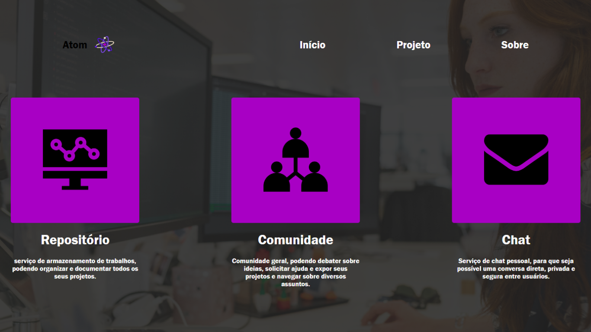

Finalidade do Projeto
A Atom, foi um projeto acadêmico, desenvolvido por mim e minha equipe, durante a graduação. A Atom, é uma plataforma que te permite publicar todos os seus projetos, e ter controle de todos eles por meio de um repositório virtual. A Atom foi criada para suprir a falta de visibilidade, sobre ideias geniais de projetos/artigos científicos. A Atom ainda está em desenvolvimento e pussui elementos para serem melhorados, mas com a plataforma visamos auxiliar diversos alunos, pesquisadores e empresas interessadas a encontrarem novas ideias e consilidarem seus trabalhos realizados.
Tecnologias Utilizadas
A Atom, foi desenvolvida utilizando diversas tecnologias, vou explicar como foi um pouco do processo de criação. Primeiramente, para o design da plataforma e como ficariam seus componentes, utilizamos o Figma e o Canva para auxiliar esta parte, partindo agora para o design na Web, utilizamos HTML, CSS e Javascript para tornar o site intuitivo e interativo. Na parte de banco de dados e manipulação de dados, utilizamos técnicas de banco de dados relacional, e a tecnologia utilizada para criar a base de dados foi o XAMPP junto com o MySql, para utilizarmos um servidor local na máquina, e na manipulação de dados, utilizamos PHP para tratar e armazenar esses dados.
Considerações Preliminares

Com as primeiras apresentações e testes da Atom, analisamos um grande interesse do público nessa área científica, principalmente a possibilidade de interagir e debater dentro dos posts, esperamos entregar ao final do projeto uma plataforma ainda mais consistente e que supere a expectativa do público.